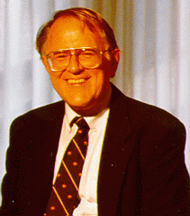

|

Gordon Bell
Microsoft Research
MyLifeBits: a Memex-Inspired Personal Store; Another TP Database
Vannevar Bush's 1945 inspirational Atlantic Monthly article
"As We May Think"
posited Memex: "a device that stores all of an individual's books, records, and communications, and which is
mechanized so that it may be consulted with exceeding speed and flexibility." Memex would have virtually unlimited
memory and support annotations and "hyperlinks". To an extent, our MyLifeBits system that began in 1998 implements
the vision. In his 1999 Turing Award lecture, Jim Gray posited Personal Memex: "that records everything a person sees
and hears, and quickly retrieves any item on request."
With yearly doubling of storage, research aimed at personal storage systems is increasing. Examples include
Haystack,
LifeStreams,
and the Remembrance Agent. At Microsoft Research,
Stuff I've Seen,
Sapphire, and
MyLifeBits have tackled the problem. In October of 2004, the First ACM
Workshop on Continuous Archival and Retrieval of Personal
Experiences sold out and generated strong enthusiasm, opening up new areas of research.
Since the project began, the number and richness of new data types continues to increase. Challenges include
acquisition of more real-time streams coming from ever-expanding "personal environments", never-ending creation
of schema and meta-data, privacy, and long term preservation, to name a few.
Biography:
Gordon Bell is a senior researcher in Microsoft's Bay Area Research
Center (BARC), San Francisco, CA. He has an SB and SM degree from MIT
(1956-57) and honorary D. Eng. from WPI (1993). He spent 23 years
(1960-1983) at Digital Equipment Corporation as Vice President of
Research and Development, where he was the architect of numerous mini-
and time-sharing computers, led the development of the VAX, and
pioneered several multiprocessor designs. During 1966-72 he was
Professor of Computer Science and Electrical Engineering at
Carnegie-Mellon University. In 1986-1987 he was the first Assistant
Director of the National Science Foundation's Computing
Directorate. He led the National Research and Education Network (NREN)
panel that became the NII/GII, and was an author of the first High
Performance Computer and Communications Initiative. Beginning in 1987
he sponsored "The Gordon Bell Prize" for Parallelism, awarded at the
annual ACM/IEEE Conference on Supercomputing. Bell is a member of the
American Academy of Arts and Sciences (Fellow), American Association
for the Advancement of Science (Fellow), ACM (Fellow), IEEE (Fellow
and Computer Pioneer), and the National Academy of Engineering. His
awards include: the IEEE Von Neumann Medal, the AEA Inventor Award for
the greatest economic contribution to the New England region, the IEEE
2001 Vladamir Karapetoff Eminent Member's Award of Eta Kappa Nu, and
The 1991 National Medal of Technology.
|
|
 Tom Mitchell
Tom Mitchell
Carnegie-Mellon University
Computer Workstations as Intelligent Agents
Personal workstations have become the primary information repository for many people, in both their professional and personal lives. Despite the
centrality of this information repository in our lives, it remains strangely disorganized and unstructured.
We consider how this situation is likely
to change over the next five years, due to the confluence of several developments including desktop search engines, automated text analysis, and machine
learning. We draw on examples from two ongoing research efforts (the CALO and RADAR projects) to build persistent, personalized learning agents that
attempt to interpret and organize workstation information, and to act as personal assistants to workstation users.
Biography: Tom M. Mitchell is the Fredkin Professor of Computer Science at Carnegie Mellon University. His research lies in the areas of machine learning,
artificial intelligence, and cognitive neuroscience. Mitchell is author of the textbook "Machine Learning," Past President of the American Association
of Artificial Intelligence (AAAI), and a member of the US National Research Council's Computer Science and Telecommunications Board. In 2002 he received
the Debye Prize from the Edmund Hustinx Foundation for his research in computer science. Mitchell is the founding director of CMU's Center for Automated
Learning and Discovery, a department within CMU's School of Computer Science that offers the world's first Ph.D. program on "Computational and Statistical
Learning." Mitchell's recent research has focused on machine learning approaches to analyzing human brain function based on fMRI data, and on machine
learning for intelligent personal assistants.
|
 SIGMOD Keynote Speakers
SIGMOD Keynote Speakers